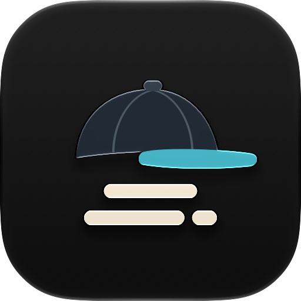
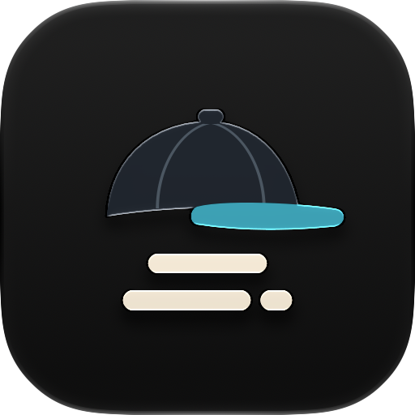

One More Cap Icon Drafts
Icon Composer App Icon Drafts
OneMoreCap-a-balanced
OneMoreCap-b-long-brim

OneMoreCap-c-minimal

Menu Bar Template Drafts
cap-bars-balanced
cap-bars-wide
cap-bars-compact
cap-bars-minimal